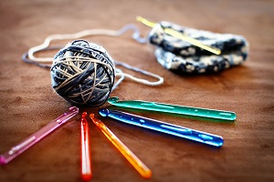
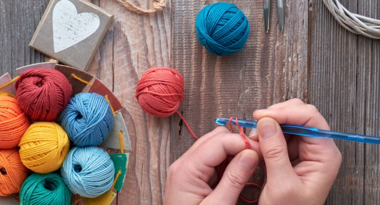

¿Qué es el Crochet?
El Crochet tejido de gancho. Es una técnica para tejer con hilo o lana que utiliza una aguja corta y específica, de metal, plástico o madera. Esta labor, consiste en pasar un anillo de hilo por encima de otro, trabajando solamente con uno de los anillos cada vez.

Breve reseña histórica
Se especula que el Crochet evolucionó a partir de las prácticas tradicionales árabes, sudamericanas o chinas, pero no existen pruebas consistentes de esta labor hasta que se popularizó en Europa durante el siglo XVI. Algunos escritores especulan que esta técnica era de hecho utilizada por antiguas culturas; pero para tejer, en lugar del típico ganchillo, usaban el dedo índice flexionado, por lo cual no quedaron objetos que confirmen esta práctica. Sin embargo, arguyen la simplicidad de la técnica para proclamar que "debió" existir en periodos antiguos. A lo largo de todo el mundo el Crochet se convirtió en una próspera industria casera, en especial en Irlanda y el norte de Francia, sosteniendo comunidades cuyo modo de vida tradicional había sido dañado por las guerras, fluctuaciones en la agricultura y el uso de la tierra y las malas cosechas. Las mujeres, e incluso a veces los niños, se quedaban en casa y tejían ropa, mantas, etc. para conseguir dinero. Los artículos eran comprados principalmente por la emergente clase media. La introducción de esta técnica como imitación de un símbolo de prestigio, más que una artesanía única por sí misma, había estigmatizado la práctica corriente. Aquellos que podían permitirse el lujo de encajes elaborados por métodos más caros y antiguos desdeñaban el ganchillo como una copia barata. Esta impronta fue en parte mitigada por la reina Victoria, quien de forma abierta compraba encajes de ganchillo artesanales de Irlanda e incluso aprendió ella misma a tejer. Se considera que la inventora del crochet irlandés fue mademoiselle Riego de la Branchardière alrededor de 1842 quien publicó patrones e instrucciones para reproducir encaje de bolillos y filtiré con esta técnica, junto con muchas publicaciones para elaborar ropa tejida a ganchilllo en lana. Los patrones disponibles ya en la década de 1840 eran variados y complejos.
